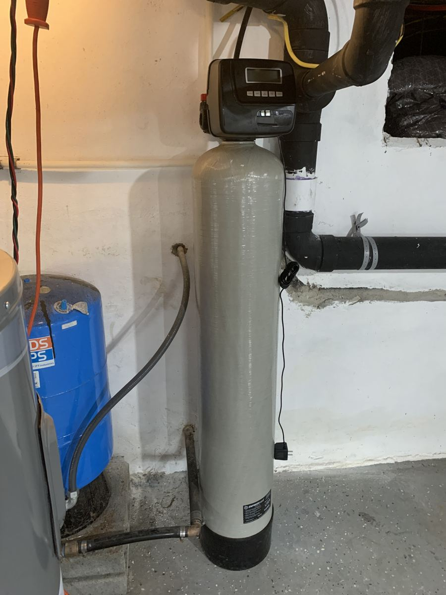
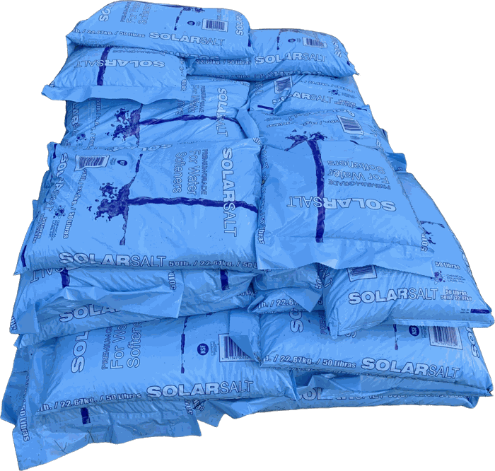

Services
Residential water treatment
Four ways we help South Jersey homeowners get better water — starting with a free in-home water test.
Water softeners
Hard water is common across southern New Jersey. A water softener removes the hardness minerals that cause scale and spotting, treating water for your whole home.
- Less scale buildup on faucets, showerheads, and glass doors
- Fewer spots on dishes and glassware
- Helps protect water heaters and water-using appliances from scale
- Sized to your home based on your water test

Carbon filters
Activated carbon filtration is a proven way to improve how your water tastes and smells. It can be used for the whole house or paired with a softener.
- Reduces chlorine taste and odor common in public water
- Can reduce many organic compounds that affect taste and smell
- Whole-house options so every tap benefits
- Recommended based on what your water test shows
Reverse osmosis drinking water
A reverse osmosis (RO) system installs under your kitchen sink and provides purified water for drinking and cooking from its own faucet.
- Great-tasting water for drinking, coffee, and cooking
- Reduces a wide range of dissolved solids
- Cuts down on buying bottled water
- Compact system that fits under most kitchen sinks
Softener salt delivery
We deliver and fill up the salt tanks and service the unit.
- No trips to the store, no heavy lifting
- Scheduled, recurring delivery so you never run out. We fill your brine tank for you.
- Serving Camden, Gloucester, Salem, Cumberland, Atlantic, and Cape May counties
- Call to set up a one-time or recurring delivery

On a private well?
Many homes in rural South Jersey rely on private wells. Well water can vary a lot from home to home, so the best first step is a water test. Call and we'll talk about what makes sense for your water.
We're well water specialists.
Rotten egg smell, orange stains, or blue-green stains? See well water treatment. Worried about PFAS, arsenic, or nitrate? See PFAS, arsenic & nitrate removal.
Selling a home? Ask about water testing. Selling a home with a well
Call for a free water test
We'll come to your home, test your water, and walk you through what it shows — with a free estimate and no pressure.